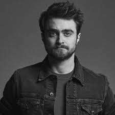

Casting the roles of Harry, Ron, and Hermione
In 2000, after a seven-month search, lead actor Daniel Radcliffe was discovered by producer David Heyman and writer Steve Kloves seated just behind them in a theatre. In Heyman's own words, "There sitting behind me was this boy with these big blue eyes. It was Dan Radcliffe. I remember my first impressions: He was curious and funny and so energetic. There was real generosity too, and sweetness. But at the same time he was really voracious and with hunger for knowledge of whatever kind.
Radcliffe had already established himself as an actor in the 1999 BBC television production of David Copperfield in which he played the title role's childhood years. Heyman persuaded Radcliffe's parents to allow him to audition for the part of Harry Potter, which involved Radcliffe being filmed.[10] (This screen test footage was released via the first set of Ultimate Editions in 2009.)[25] Rowling was enthusiastic after viewing Radcliffe's filmed test, saying she didn't think there was a better choice for the part of Harry Potter.[10][26]
Also in 2000, the then unknown British actors Emma Watson and Rupert Grint were selected from thousands of auditioning children to play the roles of Hermione Granger and Ron Weasley, respectively. Their only previous acting experience was in school plays. Grint was eleven years old and Watson ten at the time they were cast

Los Angeles Times writer Geoff Boucher, who conducted the above-mentioned interview with Heyman, added that the casting of the three major roles "is especially impressive in hindsight. The trio's selection was arguably one of the best show-business decisions over the past decade... they have shown admirable grace and steadiness in the face of teen superstardom.